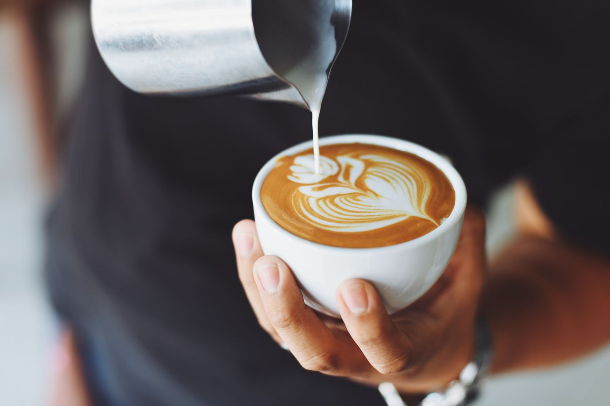
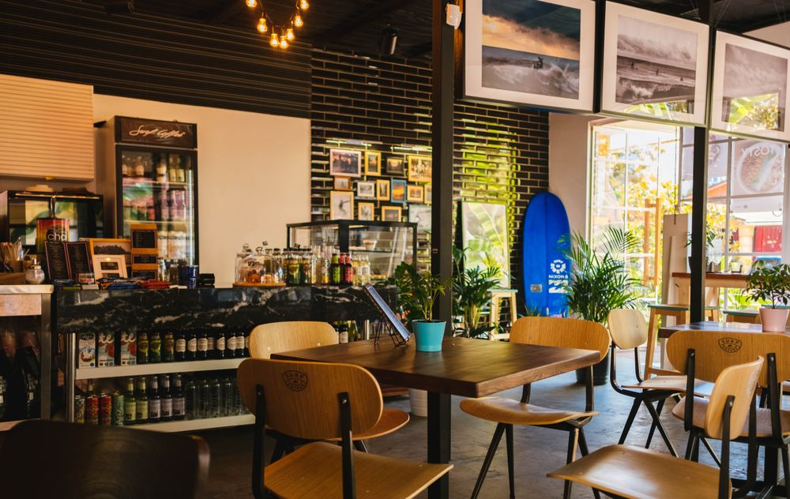

GOOD COFFEE.
ON REPEAT.
A cup worth slowing down for.
A record worth hearing all the way through.
Meet Side A, a coffee-shop concept for unhurried mornings and one-more-song afternoons.
Explore the menu

LESS RUSH.
MORE ROOM.
Imagine a neighborhood spot where the coffee is the reason you come in, and the next track is the reason you stay.
A window seat. An open notebook. Nothing on the agenda but the other side of the record.
Get to know the conceptA CONCEPT.
NOT A COORDINATE.
Side A is a fictional coffee shop, built to put Impeccable through its paces. No real address, opening hours, or checkout hiding behind a button.
Can I visit or order a coffee?
Not here—this is a design demonstration, not an operating café. The menu and brand are illustrative, and there is no ordering or booking service.
What is being tested?
Impeccable’s visual-direction workflow, responsive layout, typography, and accessibility. This page uses HTML and CSS only; the navigation and these disclosures work without JavaScript.
Where do the images come from?
The coffee photograph and café interior photograph are stock images from Pexels, saved locally for this demo. They do not depict a real Side A location.